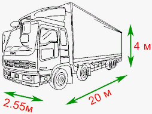
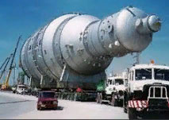
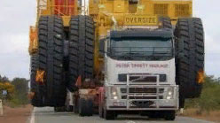

Крупногабаритный груз
— перевезти крупногабаритный груз цена —
Перевозка крупногабаритных грузов - транспортная компания Gruzoperevoz.org осуществляет грузоперевозки крупногабаритные по территории Украины в полном объеме. Сотрудники нашей компании ответственно подходят к перевозке тяжеловесных (тип крупногабарит) грузов, а также имеют необходимый опыт и достаточную квалификацию, чтобы перевезти груз тяжелый крупногабаритный успешно. Данный вид транспортировки отличается определенной спецификой, которую необходимо учитывать в обязательном порядке, так как цена ошибки очень велика.
Крупногабаритная грузоперевозка по Украине – это особое направление в организации перевозок. Не так много профессиональных транспортных компаний, обладающих необходимыми навыками, разрешениями, техникой и опытом для выполнения транспортировок подобных крупногабаритных объектов. Грузы тяжи крупногабаритные – это как правило дорогостоящие грузы и требует от транспортировщиков особой ответственности, определенного опыта и знаний.
Сервис по перевозки грузового крупно-габарит-груза включает в себя целый комплекс требований. Такие грузоперевозки отличаются специальными условиями, скоростным режимом, соблюдением определенных правил дорожного движения и требований при транспортировке. А также: подготовка соответствующих документов, наличие всех разрешительных документов (для крупногабаритных грузоперевозок), согласовывание маршрута дввижения с Госавтоинспекцией, разработка, утверждение оптимального маршрута транспортировки, индивидуальные характеристики трасс, особенности рельефа, наличие на пути следования населенных пунктов и даже погодные условия. В дополнении, также выполняется подбор подходящего транспортного средства и водителя, гарантирующего полную сохранность груза и своевременную доставку по месту назначения указанного заказчиком.
Грузы крупногабаритные — это тип груза, параметры которого по весу или размерам превышают допустимые для транспортировки с шириной более 2,6 метров, высотой 4 метра или длиной более 22 метров. Они должны перевозиться согласно правилам дорожного движения и требует специальных решений для своей транспортировки.
 Транспортные средства, задействованные в перевозке крупногабаритных и весомых грузов, обязательно должны иметь специальные опознавательные знаки, наша техника полностью соответствует европейским стандартам, весь транспорт в нашем автопарке регулярно проходит техобслуживание в сервисных центрах. Все сотрудники нашей компании обладают необходимыми знаниями и навыками для работы. Особенно важен опыт водителя, который требует особых умений управлять спецтехникой, маневрировать и хорошо ориентироваться в разработанном маршруте с учётом его особенностей. Для нас важно - доставить клиентский крупногабаритный важный груз к пункту назначения точно в оговоренный срок. Важную роль, при этом, играет неустойчивость перевозимых предметов, и именно поэтому, перевозка крупногабаритных грузов весом из разряда крупногабаритных, должна проводиться только профессионалами, которые смогут учесть все особенности вождения транспортного средства в таких условиях.
 Перевозка по Украине крупногабарит-груза осуществляется специальным транспортом, который подбирается исходя из особенностей груза клиента, его размеров и веса (которые не вписываются в общие стандарты). Для транспортировки таких заказов, мы используем низкорамные прицепы и тралы разной грузоподъемности, краны манипуляторы, длинномеры, площадки. Полезную площадь низкорамных прицепов можно увеличить при помощи специальных расширителей, что делает их очень подходящим транспортом для транспортировки данного вида (крупногабаратный) грузов. Экспедиционно-транспортная компания-логистик Gruzoperevoz.org сотрудничает с огромным количеством строительных, сельскохозяйственных и промышленными предприятий. Имея огромный опыт в транспортировке разнообразных крупных грузов, наши специалисты смогут быстро и надежно доставить по месту назначения. Будьте внимательны при выборе специалистов для решения ваших задач по данной (сложного вида) грузовой крупногабаритной транспортировке. Ошибки могут обойтись слишком дорого.
 Оптимальный транспорт для грузоперевозки крупногабаритной - специальными тягачи. В автопарке компании имеются: низкорамные тралы разной грузоподъемности, краны манипуляторы, длинномеры, площадки, используются узкоспециализированные прицепы, лафеты и помосты. Транспортировка груза (разряд крупногабаритный) проводится такими спецсредствами: лафеты - это специальные платформы, состоящие из двух направляющих и без дна между ними. Чаще всего они используются для перевозки автомобилей или маленьких судов; трал - это длинная платформа с усиленной конструкцией (редназначен для транспортировки тяжелой спецтехники и промышленного оборудования); эвакуаторы - предназначены для работы с любой колесной техникой или прицепами с тяжелым оборудованием.
Крупного габарита груз, который перевозит наша компания: крупное промышленное оборудование; сложные металлоконструкции; строительная и дорожная техника; строительные бытовки; блок-контейнеры; сельскохозяйственный транспорт и технику; крупногабаритные ёмкости и цистерны; комбайны; трактора; экскаваторов; катера; яхты; железобетонные плиты А также все остальные виды грузов, относящиеся к категории "крупногабаритных". Благодаря большому опыту работы на рынке грузоперевозок и надежным транспортным средствам, мы гарантируем выполнение заказа любой сложности.
Просчитать стоимость транспортироки крупногабаритных тяжеловесных грузов по Украине, вам помогут наши менеджеры с индивидуальным учётом сложности погрузочно-разгрузочных работ, маршрута, характера груза, его габаритных размеров и веса.
-
офис-менеджер
044 530 50 11 -
менеджер
066 257 33 25менеджер
098 721 52 57
ЕСЛИ ВАМ НЕОБХОДИМО СДЕЛАТЬ ЗАКАЗ ИЛИ ВОЗНИКЛИ ВОПРОСЫ ОТНОСИТЕЛЬНО ПЕРЕВОЗКИ КРУПНОГАБАРИТНОГО ГРУЗА, СВЯЖИТЕСЬ С МЕНЕДЖЕРАМИ НАШЕЙ КОМПАНИИ В ЛЮБОЕ УДОБНОЕ ДЛЯ ВАС ВРЕМЯ ПО ВЫШЕУКАЗАННЫМ ТЕЛЕФОНАМ ИЛИ НАПИШИТЕ НАШЕМУ МЕНЕДЖЕРУ, ЗАПОЛНИВ УДОБНУЮ ФОРМУ НА САЙТЕ.